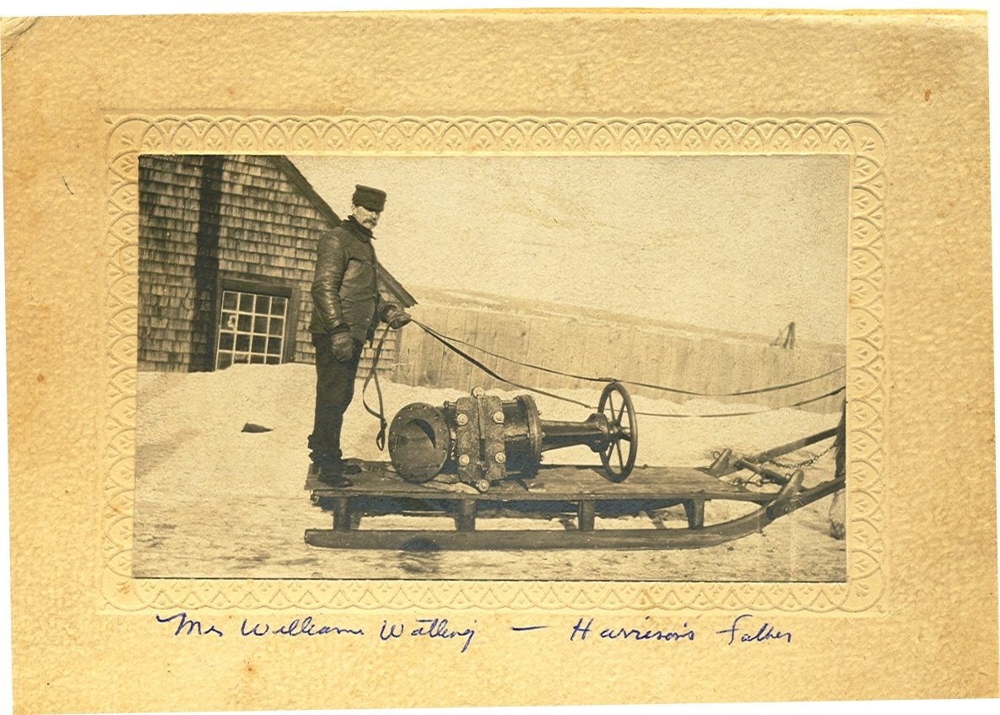
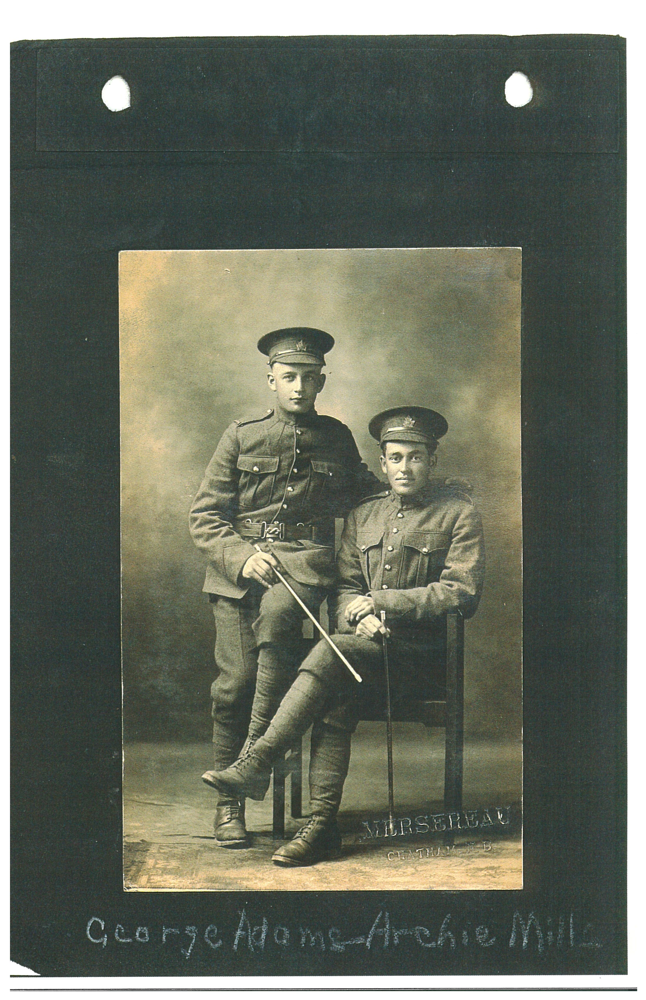

The Family Chronicle
No. 123 November 1, 2006
____________________________________________________________________

The photo above, courtesy of Steven Chase, shows
William Watling (1858-1924)
Above photo
The above photo shows a typical flat sled of the period drawn by one horse. The sled runners were protected by an iron shoe.
A box, 24 to 30 inches high, would be added to the sled when hauling wood, smelts, or other goods. John and Walter would travel to Hardwicke in a box sled, load a half-ton of smelts on each and return home the same day.
The next day they would take the smelts to A&R Loggie Co. in Loggieville, or W. S. Loggie Co. in Chatham – two men, two horses and two days for $5.00
If carrying passengers. hay or straw would be often be put in the bottom for insulation and added comfort for those sitting on the floor – and, as I recall, although seats could be made, we usually sat on the floor and the driver usually stood. Add to that, blankets or the old buffalo robe and one could be reasonably comfortable. Sometimes stones or “irons” would be heated and put in the sled to help keep us warm.
I do not recognize the buildings in the background. The item on the sled appears to be a large valve from a water, steam or sewer line. Readers’ comments welcome.
WW1

George Adams and Archie Mills during WW! (Courtesy of Bruce Caughill)
I am amazed at the number of people from the Little Branch who served during WW1. The latest I became aware of is George Adams, son of George and Jessie (Finno) Adams who lived at little Branch less than a half-mile as the crow flies from my home.
The Archie Mills shown in the photo was a son of John Alexander and Mary (MacNaughton) Mills and a brother of Aunt Kate (Mrs. James A. Watling). Archie was killed overseas and is buried at Nine Elms Military Cemetery in France. I do not know if George Adams served overseas. Merserau, the photographer, I believe, operated a studio in Chatham, NB.
William A. Adams
Will Adams (1896-1977), son of George Adams and Jessie Finno, also served in WW1. He married Annie Pardon of England and they returned to Canada in 1921. Later they moved to Moose Jaw, Saskatchewan. Brother Ken remembers that one of the Adams boys, Elmer he thinks, went to Saskatchewan after WW2 to visit his half-brother, Will.
The Family Chronicle (Copyright) is an occasional newsletter published by Don Glendenning and posted on the family website. It is intended to share information about my family, community and the times in which I grew up. While every effort is made to be accurate, errors are likely to occur. Comments, enquiries and information may be sent to 62 Queen Elizabeth Drive, Charlottetown, PEI, C1A 3A9. Tel: 902 892 5859. Email: dglende@auracom.com Web: www.glendenning.net/don